Oracle软件的安装
这个专题是关于如何在redhat 4.8上安装orale 9.2.0.8
第三章节是安装oracle 9.2.0.8
错误处理
如之前安装系统时有按照上面安装系统章节说的安装了必要的软件包后，应该不会出现包缺失的情况
如运行sqlplus命令出现 segment fault，需将gcc降级，具体如下:
1. cd /usr/bin (as root)
2. mv gcc gcc.script
3. mv g++ g++.script
4. ln -s gcc32 gcc
5. ln -s g++32 g++
6. login as oracle software owner (make sure environment is correct)
7. cd $ORACLE_HOME/bin
8. relink all
1.解压缩安装文件
cpio -idmv < amd64_db_9204_Disk1.cpio
cpio -idmv < amd64_db_9204_Disk2.cpio
cpio -idmv < amd64_db_9204_Disk3.cpio
2.9204安装
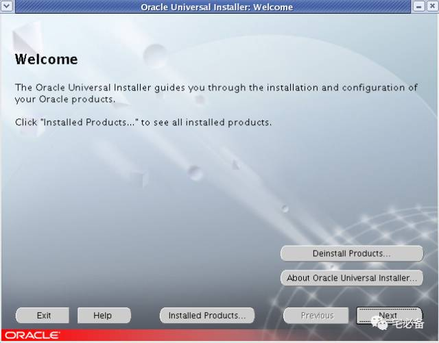
指定inventory位置
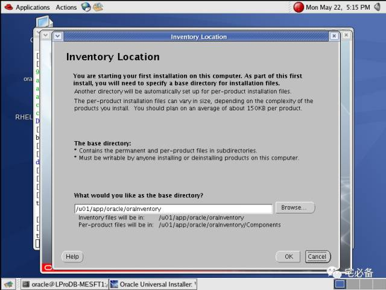
指定管理员组
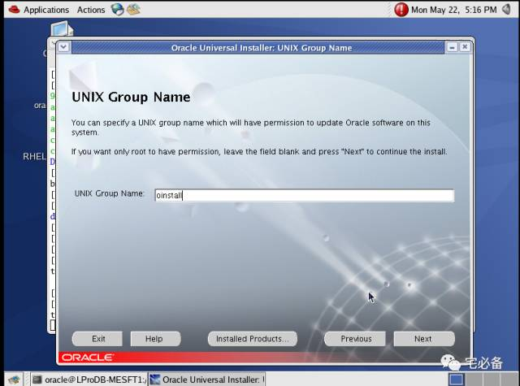
执行脚本后按继续*(root用户)
/tmp/orainstRoot.sh
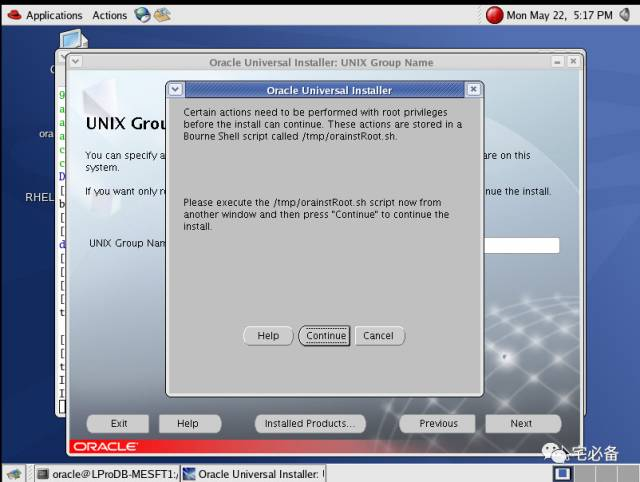
指定安装目录
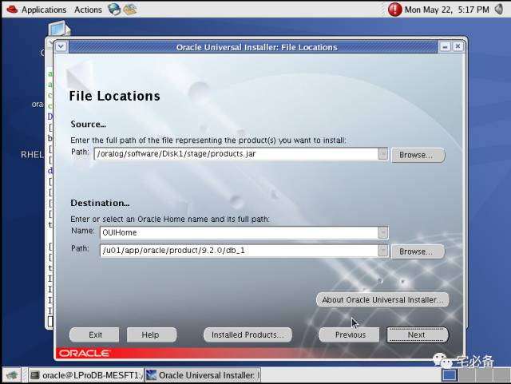
选择第一个
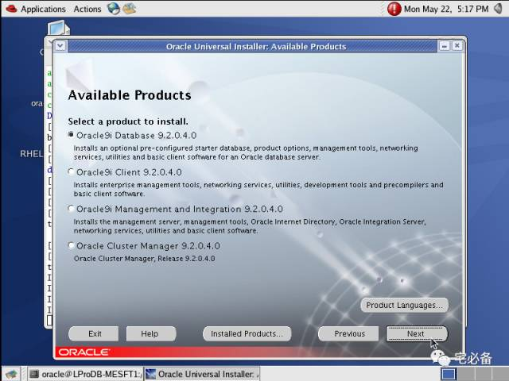
选择企业版
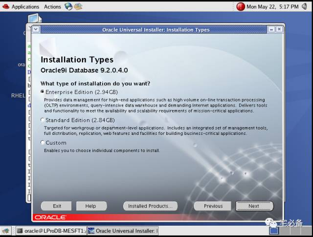
选择software only
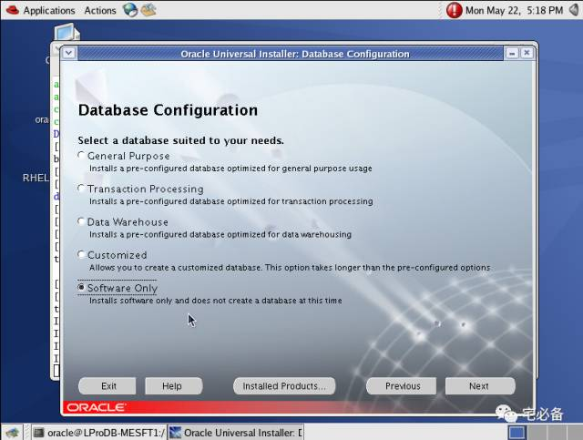
点击install
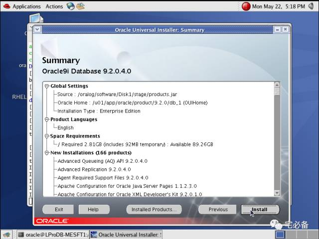
开始安装
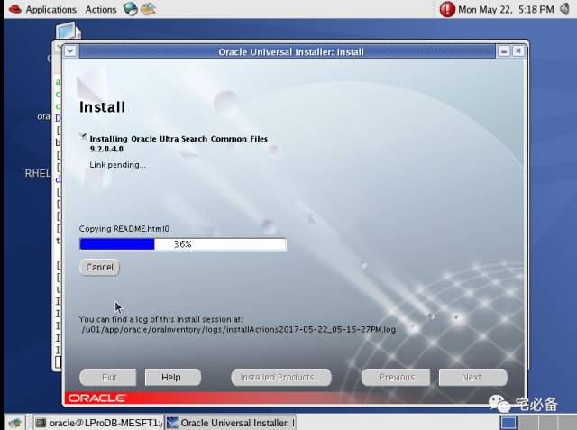
运行安装后的脚本*(root用户)
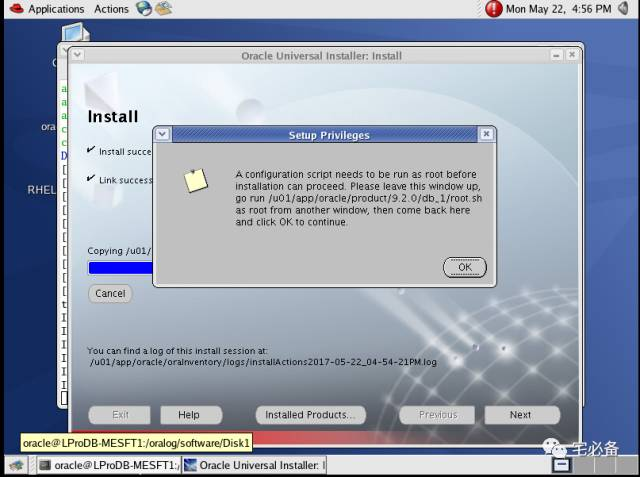
结束安装
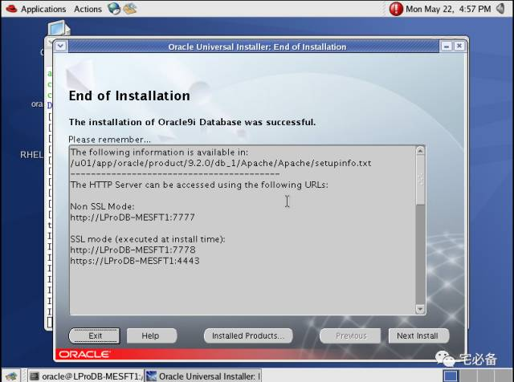
3.安装9207
解压 9207_64linux安装包后安装
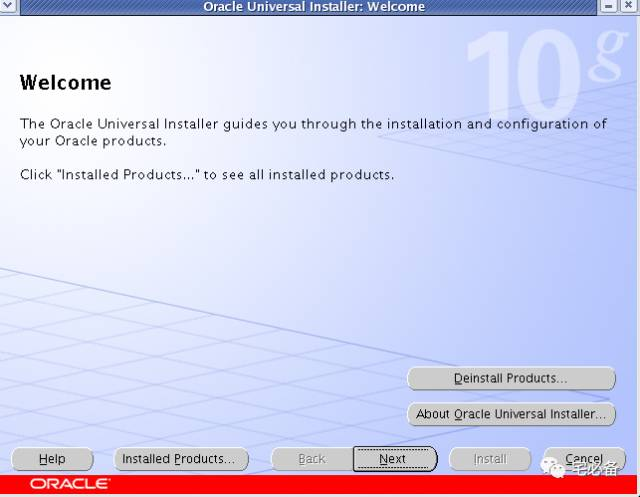
指定文件位置
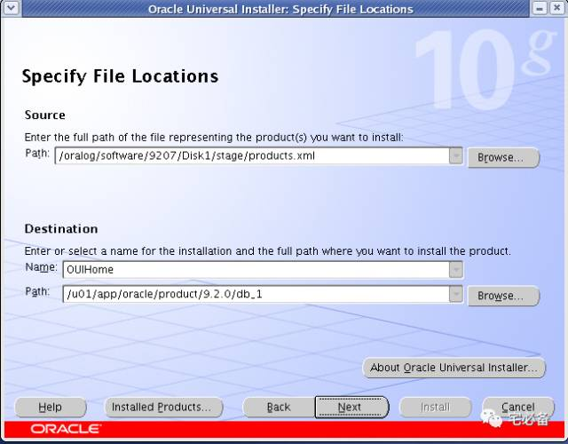
选择第一个
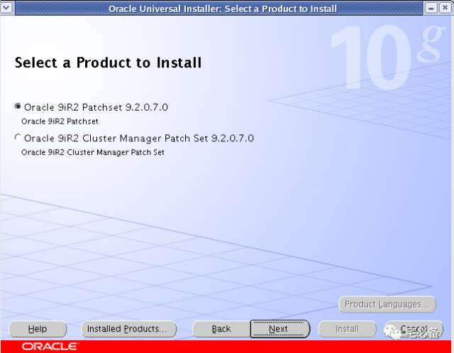
点击安装
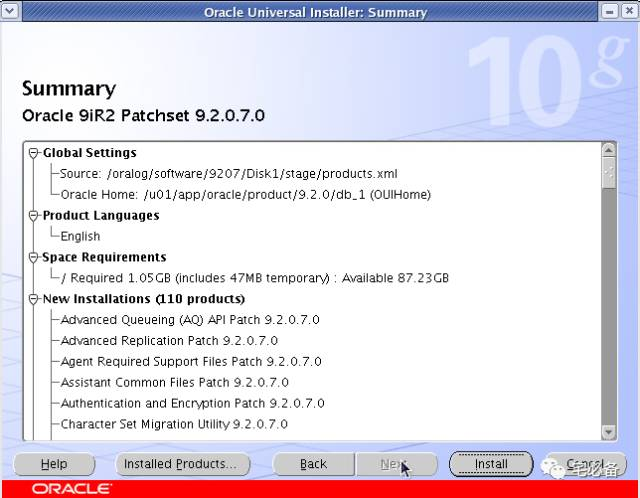
开始安装
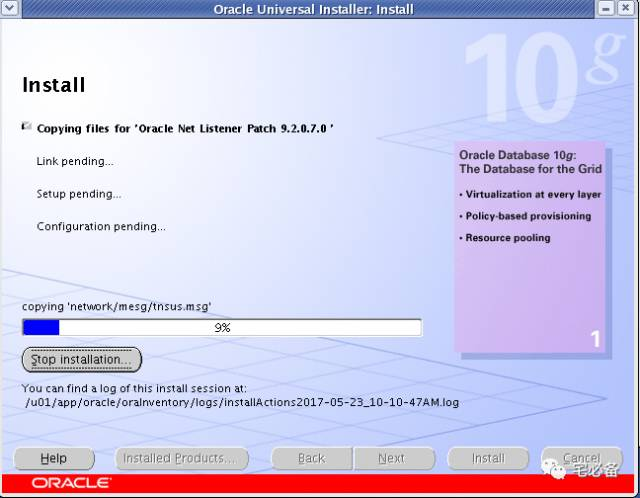
结束安装
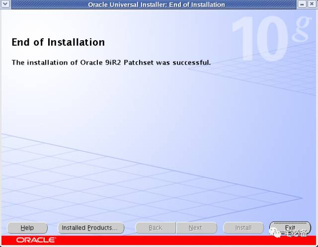
4.安装9.2.0.8
安装9.2.0.8同9.2.0.7
解压 p4547809_92080_Linux-x86-64安装包后安装
到这里已经安装完毕，下一章节介绍新建数据库实例